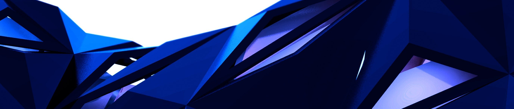
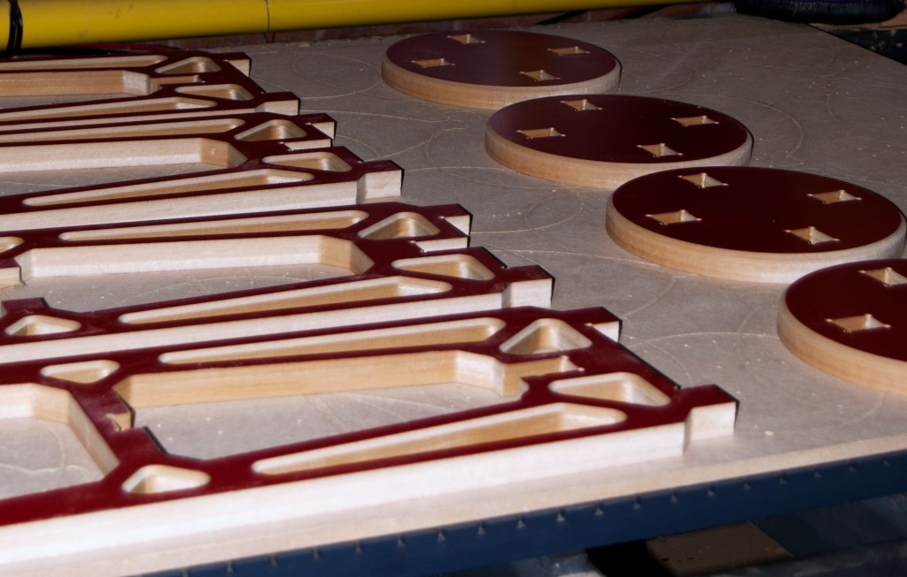

DESIGN
Design is where ideas become systems, objects and experiences — shaped through material, digital and collaborative processes.
This section brings together projects across learning environments, furniture, fabrication and spatial design, exploring how concepts evolve through making, iteration and use.

